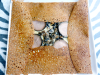

Galettes
Toutes nos galettes sont préparées à base de farine Bio française 100% sarrasin.
De 4,50€ à 12,90€, il y en a pour tous les goûts, des plus classiques aux plus originales.
Ci-dessous un extrait de notre carte.
La Super Complète
10,20€
Jambon, oeuf, emmental,
champignons à la crème, concassé de tomates

La Cancale
11,20€
Saumon fumé, fondue de poireaux,
citron
Le Sillon
9,90€Jambon cru, tomates, mozzarella, pesto
La Bon Secours
8,20€Jambon cru, fondue de poireaux, emmental
La Cézembre
8,00€Jambon cru, oeuf, concassé de tomates
La Paramé
9,70€Bûche de chèvre, Bleu de Bresse, camembert de Normandie, salade
La Saint-Servan
9,70€Bûche de chèvre, champignons, poitrine grillée, concassé de tomates
L’Intra-Muros
8,40€Jambon, bûche de chèvre, poireaux
La Rothéneuf
8,20€Bûche de chèvre, poitrine grillé, noix

La Rance
9,20€Reblochon, poitrine grillée, pommes de terre rissolées au persil, salade verte
La Cité d’Aleth
8,20€Poulet, champignons, Bleu de Bresse
La Conchée
9,20€Poulet, oeuf, fondue de tomate, emmental
La Fort Lalatte
9,80€Poulet, bûche de chèvre, fondue d’oignons, pommes de terre rissolées au persil
La Cap Fréhel
10,80€Andouille de Guémené, pommes de terre rissolées au persil, salade
La Dinard
10,80€Andouille de Guémené, champignons à la crème, emmental
La Pointe du Grouin
10,80€Andouille de Guémené, fondue d’oignons, concassé de tomates
La Môle
8,80€Bleu de Bresse, poitrine grillée, champignons à la crème
La Solidor
12,50€Noix de Saint-Jacques, fondue de poireaux, citron
La Grand Bé
12,50€St Jacques , fondue d’oignons, salade
La Charcot
9,50€Pommes de terre rissolées au persil, poitrine grillée, miel, Bleu de Bresse
La Chateaubriand
10,80€Andouille de Guémené, pommes caramélisées, salade verte
La Dugay Trouin
7,60€Camembert de Normandie, pommes caramélisées
La Surcouf
7,60€Bûche de chèvre, miel, noix
La Jacques Cartier
9,90€Poire, Bleu de Bresse, jambon cru, noix, salade verte